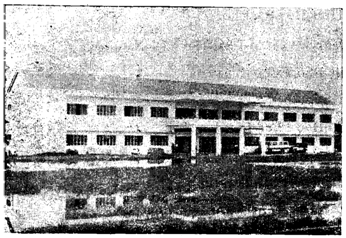

TỔNG KẾT SA-ĐÉC
Nói chung, đất nước Việt-Nam ngày xưa vào thế kỷ thứ sáu khi nước Phù-Nam sụp đổ, kế đến Chân-Lạp, qua đầu thế kỷ thứ tám trở thành Thủy-Chân-Lạp.
Hai tiếng Sa-Đéc co tên PSARDEK tức là Chợ Sắt, thời kỳ này không có chánh quyền nào vững chắc, luôn luôn có sự thay đổi. Lúc bấy giờ, một số người Trung-Hoa bất mãn nơi chánh quốc của họ, do tướng Nhà Minh cầm đầu là Dương-Ngạn-Địch, xin phép chúa Nguyễn Hiền-Vương ở Huế di cư qua Việt-Nam, xin dung thân vào vùng Thủy-Chân-Lạp khai hoang lập ấp, đám người này đến sống rải rác các nơi trong lãnh thổ, chính Sa-Đéc cũng có mặt họ ở đến ngày nay.
Năm 1759, trong lúc trào thần Chân-Lạp bất đồng ý kiến, chống đối lẫn nhau, Chúa Nguyễn mang quân sang chinh phạt, Miên Hoàng thua, bị giết. Nặc-Tôn dâng đất Tầm-Phong-Long lập thành Đông-Khẩu-Đạo tức là vùng Châu-Đốc và Sa-Đéc.
NGÀY XƯA BÓNG CỜ NGUYỄN-VƯƠNG PHẤT PHỚI
TRÊN ĐẤT SA-ĐÉC
Năm Đinh-Mùi (1787), Đức Cao-Hoàng đem quân đóng tại Hồi-Oa (Nước Xoáy) tại Tân-Long, sau đổi là Long-Hưng. Lúc bấy giờ, Sa-Đéc trở nên rộn rịp, quân lính ngày đem lo xây thành đắp lũy để chống ngăn quân giặc.
Nơi đây trải qua bao cuộc đao binh khói lửa, gây tang tóc cho đồng bào Sa-Đéc không bút mực nào tả ra cho hết giữa Tây-Sơn và Chúa Nguyễn tranh hùng. Những chiến trường đẫm máu Cồn-Tiên, Bãi-Hổ, vàm sông Long-Hậu còn văng tiếng. Nay nhắc đến người dân Sa-Đéc không khỏi đau lòng cho cảnh cốt nhục tương tàn giữa người Việt và người Việt.
CỜ TAM SẮC HIÊN NGANG TRÊN LÃNH THỔ
MIỀN TÂY SA-ĐÉC
Năm 1867, quân đội Pháp do tướng De Lagrandière chỉ huy, từ Định-Tường kéo xuống chiếm thành Vĩnh-Long ngày 20-6-1867, đến chiếm luôn Châu-Đốc và Hà-Tiên cũng trong mấy ngày. Lúc bấy giờ, De Lagrandière bố cáo xứ Nam-Kỳ thuộc Pháp.
Sau khi chiếm trọn sáu tỉnh miền Nam, quân đội Pháp lo tổ chức hành chánh khắp nơi trên lãnh thổ để cai trị. Riêng tại tỉnh Sa-Đéc xưa nằm trong địa phận tỉnh Vĩnh-Long, khi quân Pháp đến Sa-Đéc, chúng chọn Mũi Cần-Gió đặt tỉnh lỵ tại đây trước tiên để ngăn ngừa bộ đội kháng chiến từ Đồng-Tháp-Mười tràn qua ngỏ này. Thời gian sau, chúng dẹp xong các toán quân do Thiên-Hộ-Dương, Nguyễn-Văn-Biểu, Phủ-Cậu chỉ huy, cùng các nhóm kháng chiến khác, lớp bị bắt và sơ tán rải về ẩn dật trong các nơi hẻo lánh trong làng mạc Sa-Đéc chờ cơ hội quật khởi.
Người Pháp thấy tình hình lắng dịu mới vô Doi-Cồn Tân-Qui-Đông mà xây cất nhà cửa sở Tham-biện tại đây. Bóng cờ tam tài treo trước dinh hằng ngày chứng kiến sự hiện diện của Chánh-Phủ Tân-Trào.
Người Pháp bắt đầu kiến tạo các cơ sở tại đây gồm: làng Tân-Qui-Đông, Vĩnh-Phước, Tân-Phú-Đông. Nay ba làng này sáp nhập là Tân-Vĩnh-Hòa. Những công việc bắt cầu, làm lộ, mở mang tỉnh lỵ, xây cất chợ búa v.v...
Năm 1888, hoàn thành cây cầu quay sắt bắt ngang sông qua Tân-Qui-Đông.
Năm 1903, bắt cây cầu đúc bằng đá sạn, nối từ làng Tân-Hưng, Tổng An-Hội là nơi nhà thương qua tỉnh lỵ. Công cuộc kiến thiết dần tạo nên những cơ sở: Tòa-Bố, Sở Giây Thép (tức Ty Bưu-Điện), Sở Kho Bạc (Ngân Khố), Sở Thương-Chánh (Quan Thuế), Sở Săn-Đầm (do chữ Gendarmerie chuyển ra, tức Ty Cảnh-Sát Công-An), Tòa Tạp-Tụng, Nhà Cercle (Câu-Lạc-Bộ), nhà hàng Bungalow, trại lính Mã-Tà, và dinh thự các quan Pháp ở riêng biệt một khu vực tỉnh lỵ là mé bên kia cầu sắt, dưới Doi-Cồn. Còn Mũi Cần-Gió sau trở thành bến tàu lục tỉnh và chạy đường Nam-Vang, ghé chuyên chở hàng hóa và rước khách. Nay Mũi Cần-Gió bị lỡ vô sâu mấy chục công đất không còn dấu vết bến tàu nữa.
Về phía tả là Rạch Sa-Đéc ăn sâu vô Rạch Sanh-Nhiên. Hai bên trồng cây ăn trái như xoài, dừa, cau, che mát rợp đường, quang cảnh vườn tược tạo thành một nơi rất sầm-uất.
Dưới thời Pháp-thuộc, mỗi lần có lễ Chánh-Chung (ngày 14 tháng bảy) hay liên hoan một cuộc lễ gì quan trọng thì có tổ chức cuộc đua ghe, đua thuyền dưới sông, dân chúng địa phương nô nức trẩy xem. Trên bờ thì có xe kéo, xe ngựa để chạy đưa rước khách di chuyển trong thành phố.
Trong thời Pháp thuộc, Sa-Đéc gồm có ba quận: Châu-Thành, Lai-Vung và Cao-Lãnh. Trải 80 năm đô hộ trên đất nước Việt-Nam, người Pháp đã tạo ra biết bao cơ sở để toan hưởng thụ lâu dài. Nhưng lòng người muốn vậy, mà trời nào để kẻ tham tàn được bền vững mãi. Rồi thì đất nước xảy cơn chuyển biến, cơ tạo xoay dần, khiến cho kẻ xâm lăng phải lìa bỏ nơi ngự trị của chúng để trở về mẫu quốc.
NGÀY 9 THÁNG BA 1945 LÀ NGÀY ĐÁNH DẤU SỰ SỤP ĐỔ
CỦA PHÁP Ở ĐÔNG DƯƠNG
Từ đó đến nay ở Việt-Nam trải qua bao cuộc thăng trầm thay đổi, hết Pháp tới Nhựt rồi Pháp trở lại, dẫn đến khi Việt-Nam trở thành nước Cộng-Hòa, cảnh chiến tranh tiếp diễn khắp nẻo đường đất nước. Bôm cày đạn xới, quốc phá gia vong, lòng người ly tán, biết bao đứa con trung thành của tỉnh Sa-Đéc gục ngã, vì bảo vệ non sông tổ quốc.
Khi người Pháp rút đi khỏi tỉnh lỵ Sa-Đéc, thì chánh quyền tỉnh Sa-Đéc thời ấy là Thiếu-tá Nguyễn-Văn-Minh(1), một sĩ quan trẻ, mới có 27 tuổi làm tỉnh trưởng chót của tỉnh này.
(1) Ông Nguyễn-Văn-Minh hiện nay làm đến chức Trung-tướng, Tổng-Trấn Sài-Gòn Gia-Định, Tư-Lệnh Biệt-Khu Thủ-Đô, và đương kiêm Tư-Lệnh Quân-Khu 3 Chiến-Thuật.
Ngày 22-10-1956, tỉnh Sa-Đéc được bải bỏ, trở thành quận sát nhập qua tỉnh Vĩnh-Long.
Ngày 24-9-1966 đến ngày 23-12-1966, tách rời Vĩnh-Long trở thành tỉnh lỵ Sa-Đéc cho đến ngày nay. Chính quyền đã dời tỉnh lỵ về mé bên chợ Sa-Đéc.
Tòa hành chánh, các ty sở đều dời về tỉnh lỵ mới. Còn tỉnh lỵ cũ ở Doi-Cồn nay trở thành Bộ Tham-Mưu Sư-Đoàn 9 Bộ-Binh đóng ở đây thuộc về Quân khu 4.
Cảnh vật tỉnh lỵ Sa-Đéc ngày nay đã thay đổi khá nhiều như chúng ta đã thấy, khác biệt quang cảnh ngày xưa. Ngày nay Sa-Đéc trên đà canh tân, sắc thái duyên dáng, dân chúng càng đến ở đông thêm và một số kiều bào ở chùa tháp về trú ngụ. Dân số mới nhứt từ năm 1971 nay lên gần ba trăm ngàn người ở rải rác trong bốn quận. Sinh cơ lập nghiệp như đa số là tín đồ Phật-giáo Hòa-Hảo.

SA-ĐÉC QUA CÁC NẺO PHỐ PHƯỜNG
KHU THƯƠNG MẠI
Châu-Thành Sa-Đéc ngày nay, bên Doi-Cồn là khu quân sự ở về phía Tân-Qui-Đông, khu thương mại, phía bên này là chợ búa mua bán tấp nập, ghe thuyền lui tới đậu dài theo bờ sông đường Phan-Thanh-Giản, từ cầu Cái-Sơn trở ra chợ.
Theo sự quan sát của chúng tôi, ở Sa-Đéc phần đông người Huê-Kiều chiếm ưu thế về thương mại, nắm hết các ngành quan trọng. Phố xá cất khít nhau, dài theo đường Phan-Thanh-Giản, mua bán đủ thứ. Tiệm tạp hóa, hiệu thuốc bắc, vật liệu kiến trúc, tiệm ăn v.v...
Ngày nay có phần thay đổi với bộ mặt mới. Dọc theo mé sông đường Phan-Thanh-Giản, gần khúc trên chợ san sát mọc lên nhiều dãy nhà để mua bán, làm quán ăn cho du khách ngồi nhìn ra sông Sa-Đéc, thưởng thức phong quang, cảnh náo nhiệt tưng bừng trong buổi họp chợ.
CHỢ SA-ĐÉC: Chợ Sa-Đéc cất đã lâu năm, nay có vẻ cũ kỹ. Bên trong chợ, các sạp hàng vãi chưng bày rực rỡ, bán đủ loại hàng nhập cảng và nội hóa. Phía bờ sông là chợ cá và quán ăn bình dân đều tập trung vào khu vực này.
HÀNG TRÁI CÂY: Cam quít, xoài, bưởi, mãng cầu, bán theo tập tục ở đây mỗi chục 18. Các loại trái cây khác: chôm chôm, nhãn, bòn bon thì bán kí lô tùy theo giá cả.
Chợ nhóm từ 5 giờ khuya đến 1 giờ trưa là tan hết để dọn dẹp, chớ không có nhóm buổi chiều như các chợ khác.


Hàng bán trái cây ở chợ Sa-Đéc
với tập tục cổ truyền mỗi chục 18.
ĐƯỜNG SÁ TRONG CHÂU-THÀNH: Theo sự nhận xét của chúng tôi, ở đây chỉ có hai con đường đông đảo phồn thịnh nhất là đường Tống-Phước-Hòa và đường Phan-Thanh-Giản. Đường Tống-Phước-Hòa hai bên phố xá khang trang, ngay hàng thẳng lối. Có những dãy khách sạn, quán ăn, tiệm kim hoàn, hiệu sách, nhà thuốc tây, hãng xà bông, rạp hát. Đầu trên sân banh cũ này là Tòa Hành Chánh xây cất vào năm 1969 hoàn thành năm 1970, trên có lầu, day mặt ra đường Tống-Phước-Hòa. Trước sân rộng rải, cảnh trí khang trang lộng lẫy. Tòa Hành Chánh(1) lợp ngói móc, tăng thêm phần uy nghi cổ kính, thích hợp cho những ai có tinh thần tồn cổ.
(1) Tòa Hành Chánh mới do Đại-tá Huỳnh-Ngọc-Diệp đứng ra xây cất vào năm 1969 đến năm 1970 nay đã làm việc.
Các ty sở nằm rải rác trong thành phố, qua các con đường nhỏ trải đá, mang tên các vị danh tướng anh hùng liệt sĩ nước nhà.
Nhận xét chung, đường sá trong Châu-Thành Sa-Đéc ngày nay còn chật hẹp nhiều, mùa nắng còn đỡ, nếu mùa mưa to người đi bộ khó khăn, vì lầy lội và có nhiều ổ gà trơn trợt.
GIAO THÔNG ĐƯỜNG BỘ: Bến xe nằm ở vị trí sát bờ rạch cầu Cái-Sơn, trước chùa Ông Quách, bến xe nhỏ hẹp, nơi đây thường trực chừng 5, 7 chiếc chia chạy con đường Sài-Gòn của hiệu xe đò Tân-Phát, và xe nhỏ chạy qua các con đường Kiến-Phong, Mỹ-Luông. Xe chạy mỗi ngày. Ở đây chừng 3 giờ là hết xe.
BẾN XE CHẠY VĨNH-LONG: Hiện nay phía bên cầu nhà thờ xã Hòa-Khánh, Xóm Đạo, dựa con lộ số 8 có một bến xe đò nhỏ đưa khách từ Sa-Đéc quá cầu Bắc Mỹ-Thuận và Vĩnh-Long. Các xe xích-lô máy, xe ba bánh cũng đậu ở đây. Mỗi khi khách xuống xe thì ngồi xe xích lô máy vô Châu-Thành.


Quang cảnh trước bờ sông chợ Sa-Đéc
tấp nập ghe xuồng lui tới buôn bán
GIAO-THÔNG ĐƯỜNG THỦY
Tại bến chợ Sa-Đéc có ghe máy chở hành khách đi các quận, xã, trong Châu-Thành, Đức-Thành, Long-Hậu, Long-Hưng, qua Kiến-Phong và Cần-Thơ.
VỀ MẶT KIẾN THIẾT
Châu-Thành Sa-Đéc ngày nay đang trên đà kiến thiết cất thêm nhiều cơ sở mới, Ty Chiêu-Hồi, Xây-Dựng Nông-Thôn, Hội-trường và nhiều cơ sở khác sắp khởi công trong năm 1971.
VĂN-HÓA GIÁO-DỤC: Về ngành giáo dục, ở đây đã có xây cất thêm nhiều trường Trung, Tiểu-học. Ngoài các trường công-lập còn có các tư-thục, Trường Bồ-đề, trường Trung, Tiểu-học của người Trung-Hoa, đều khang trang lộng lẫy.
Trọng tâm của chánh quyền là phát triển nền giáo dục địa phương. Vì vậy, ở cấp Trung-học, tại mỗi quận đều có trường Trung-học đệ-nhất-cấp công-lập, riêng tại quận Châu-Thành (tỉnh lỵ) có trường Trung-học đệ-nhị-cấp công-lập. Số trường kể như sau, trong toàn tỉnh:
BẬC TRUNG HỌC
Trung-học công-lập: - 4 trường 59 lớp- 4082 học sinh-
Trung-học bán-công:- 4 trường 3 lớp - 213 học sinh-
Trung-học tư-thục:- 2 trường 12 lớp- 885 học sinh-
TỔNG KẾT CƠ SỞ GIÁO-DỤC
BẬC TIỂU-HỌC TOÀN TỈNH SA-ĐÉC
Số trường - 100- SỐ GIÁO-VIÊN-
Số phòng học - 438 - Nam - 182-
Số lớp- 688 - Nữ- 325-
Số học sinh Nam - 21.961- _______
Nữ- 18.649 507
Cộng ______
40.610
XÃ-HỘI VIỆN MỒ CÔI
(ẤP HÒA-KHÁNH)
Do một nữ tu sĩ làm giám-đốc qui tụ trên 70 trại viên, thành lập từ năm 1900, có một trường học do các dì phước giảng dạy cho các trẻ em côi cút do viện nuôi dưỡng.
Nhà dưỡng lão, ấp Hòa-Khánh, thiết lập gần Viện mồ côi, thâu nhận trên 30 người già yếu, tàn tật, vô gia cư, do các nữ tu sĩ chăm nôm.
Các cơ sở trên đây đều có trợ cấp hoặc định kỳ hoặc bất thường của Bộ Xã-Hội và của Tỉnh.
Ký-túc-xá chùa Phước-Thạnh do Thượng-Tọa Thích-Từ-Nhơn cai quản.
Ký-túc-xá, Hội Bảo-trợ Gia-đình Binh-sĩ khu 41/CT.
Nhà Bảo-Sanh
Ấu-Trĩ-Viện (do Hội Bảo-trợ Gia-đình Binh-sĩ)
Lớp May Cắt (Khu 41 Chiến-Thuật quản nhiệm)
Lớp mẫu-giáo chùa Phước-Huệ do Sư-nữ Thích-Như-Ngọc làm giám-đốc.
Lớp mẫu-giáo chùa Bửu-Minh do Tu-sĩ Thích-Bửu-Chơn làm giám-đốc.
NÔNG-NGHIỆP
Sa-Đéc là một tỉnh thuộc đồng bằng có đất phù sa phì nhiêu thích hợp với việc trồng lúa, cây ăn trái và hoa màu, phụ do đó phần đông đồng bào chuyên sống về nghề nông. Tuy nhiên, vì nằm trên đường đi từ các tỉnh Châu-Đốc, An-Giang, Rạch-Giá, Kiến-Phong đến Đô-Thành, nên các hoạt động về thương mãi cũng rất sầm uất, có thể nói chính ngành hoạt động này đã làm giàu cho đồng bào, một số lớn là Hoa-Kiều tại Châu-Thành.
- Mùa màng: Diện tích chung của tỉnh: 78.920 ha
- Lúa: Diện tích canh tác là 51.232 ha, phân chia như sau:
- Ruộng hai mùa: 2.551 ha
- Ruộng một mùa:
- Sạ: 33.303 ha
- Cấy: 15.368 ha
Phân tách về lúa lỡ và lúa mùa như sau:
(Lỡ: 17.931 ha
Lúa sạ: ( 33.303 ha
(Mùa: 15.359 ha
(Lỡ: 10.248 ha
Lúa cấy: ( 17.932 ha
(Mùa: 7.684 ha
Trung bình hằng năm thặng dư vào khoảng 18.000 tấn đề xuất tỉnh.
CƠ SỞ Y-TẾ
Nền y-tế phát triển điều hòa, cung ứng đầy đủ nhu cầu cho dân chúng thôn quê và gồm có:
3 chẩn-y-viện tại 3 quận Đức-Thành, Đức-Tôn và Lấp-Vò.
1 nhà hộ-sinh quận Lấp-Vò.
12 nhà hộ-sinh xã (công): 2 tại Sa-Đéc, 5 tại quận Đức-Thành, 5 tại quận Lấp-Vò.
1 nhà hộ-sinh xã (tư) tại quận Đức-Tôn.
1 bảo-sanh-viện tư tại Sa-Đéc (Châu-Thành)
56 trạm y-tế: 16 tại quận Châu-Thành, 15 tại Đức-Thành, 3 tại Đức-Tôn va 22 tại Lấp-Vò.
4 tiểu bệnh-xá hộ-sinh ấp đời mới.
Tại tỉnh-lỵ có 1 bệnh-viện gồm có:
1 trại bệnh
Để đáp lại nhu cầu của dân chúng địa phương, trại bệnh đã có 160 giường: 23 giường nằm có tiền, 137 giường không tiền.
Song song với sự tăng cường giúp cho bệnh nhân, 3 cơ cấu được tăng gia về công tác cũng như vật liệu, dụng cụ và máy móc.
CHÁNH TRỊ VÀ HIỆP HỘI
Các đảng phải chánh trị và hiệp hội có hoạt động tài tỉnh Sa-Đéc:
ĐẢNG PHÁI CHÁNH TRỊ: Việt-Nam Dân-Chủ Xã-Hội Đảng, đường Phan-Thanh-Giản, Sa-Đéc. Đảng này có 2 quận bộ tại Lấp-Vò và Đức-Thành.
HIỆP-HỘI:
- Nghiệp-đoàn xe hơi Vàm-Cống, 141 đường Bác-sĩ Thinh.
- Nghiệp-đoàn xe Lambretta.
- Nghiệp-đoàn xe lôi gắn máy và xe lôi đạp, 151/2 ấp Tân-Long, xã Tân-Vĩnh-Hòa, Sa-Đéc.
- Hội phụ-huynh học-sinh tại tỉnh-lỵ và quận-lỵ.
CÁC CƠ SỞ
TÔN-GIÁO TẠI TỈNH SA-ĐÉC
Tỉnh-hội Phật-học
Tịnh-độ Cư-sĩ Phật-hội Việt-Nam
Họ đạo Thiên-Chúa-Giáo
Tin-Lành
Cơ-Đốc Phục-Lâm
Tỉnh-hội Phật-giáo Hòa-Hảo
Cao-Đài Phái Tây-Ninh
Cao-Đài Tiên-Thiên Kiến-Hòa
Ban Quản-trị Phật-giáo Việt-Nam Thống-Nhứt
Nói đến sự sinh hoạt của tỉnh Sa-Đéc ngày nay, chúng tôi cần nêu lên một ít ngành hoạt động, giáo-dục, xã-hội, kinh-tế, y-tá hiệp-hội toàn tỉnh v.v...
Các ngành trên đây mỗi năm đều có sự thay đổi, thêm bớt đều theo tình hình đất nước, nên quyết định một con số căn bản không thể nào vững chắc được. Về ngành giáo-dục cũng thế, sỉ số và giáo chức cũng lên xuống không đồng đều. Còn về công-kỹ-nghệ, tỷ dụ năm 1970 có 5, 7 hãng xưởng đến năm 1971, bị lỗ lã dẹp bớt cũng không chừng. Vì vậy, không một chuyên viên nào ghi đúng theo thời gian tính được, trừ ra mỗi năm làm bảng thống kê mới nắm vững con số chính xác.


Tòa Hành-Chánh mới của tỉnh Sa-Đéc ngày nay
Tác phẩm này, mục đích là sưu tầm khảo cứu về lịch sử, danh-nhân, đạo-giáo, qua những tài liệu căn bản không mô tả những chi tiết về sự hoạt động hàng ngày trong đời sống công cộng. Vì thế mà chúng tôi không đề cập đến vấn đề hành chánh và kinh tế nhiều, muốn rõ chi tiết sinh hoạt mỗi ngành cần xem địa phương chí của tỉnh Sa-Đéc.